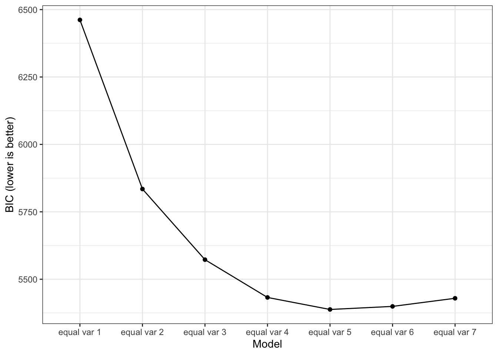
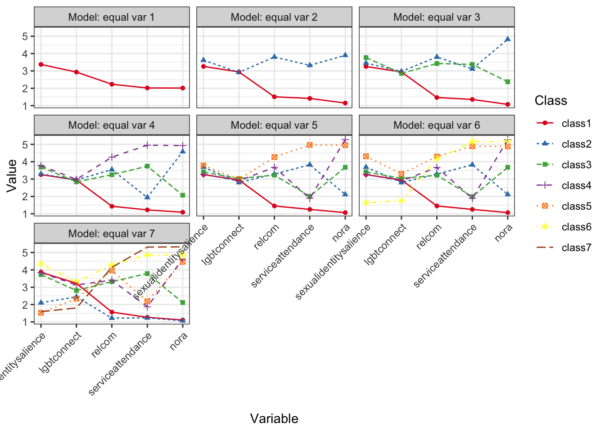
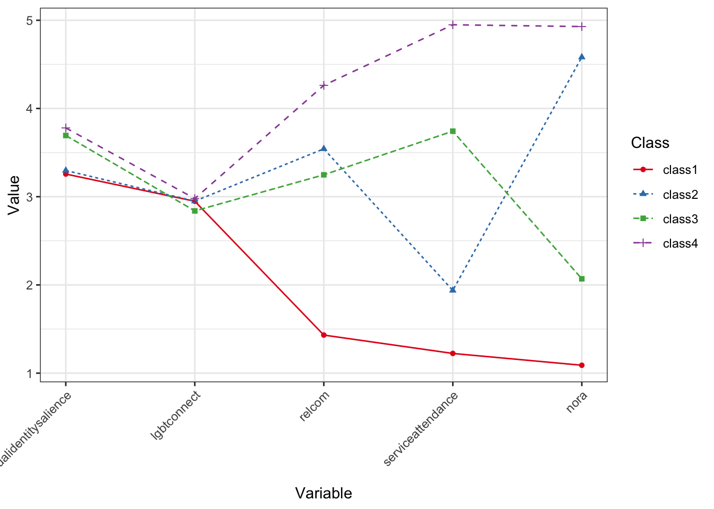

Show the code
# install.packages("pacman") # install if you don't have this package
pacman::p_load(tidySEM, haven, tidyverse, future, progressr, gt, nnet, OpenMx)
set.seed(54321)
options(mc.cores = 8)
plan(multisession)
handlers("progress") # install.packages("pacman") # install if you don't have this package
pacman::p_load(tidySEM, haven, tidyverse, future, progressr, gt, nnet, OpenMx)
set.seed(54321)
options(mc.cores = 8)
plan(multisession)
handlers("progress") org_data <- read_sav("prri_final_shareable.sav")
data <- org_datanames(data) <- tolower(names(data))
data$poc <- rowSums(data[, c("black", "americanindian", "asianamerican", "latine", "mena")])
data$racsum <- rowSums(data[, c("white", "black", "americanindian", "asianamerican", "latine", "mena")])
# Subset the data, where if POC then keep, otherwise remove.
data <- data %>%
filter(poc > 0)
ref_data <- data
data <- data %>%
filter(!(responseid %in% c("R_BzwG6ehjWl0zgRz", "R_1nPF8RGMaq0IFME")))
data <- rename(data,
"filter" = "filter_$")
# data <- data[-141, ]
data <- data %>%
mutate(racem = case_when(
racsum > 1 ~ "Multi-Racial",
black == 1 ~ "Black/African American",
americanindian == 1 ~ "American Indian",
asianamerican == 1 ~ "Asian/Asian American",
latine == 1 ~ "Hispanic/Latin",
mena == 1 ~ "Middle Easter/North African",
other == 1 ~ "Another Identity Not Listed",
TRUE ~ NA_character_
))
data$degreeofconflict <- ifelse(data$conflict == 0, 0, data$degreeofconflict)
table(data$degreeofconflict)
0 1 2 3 4 5
312 4 14 25 28 19 data$sex <- ifelse(data$sex == 1, 0, 1)lpa_data <- subset(data, select = c("sexualidentitysalience",
"lgbtconnect",
"relcom",
"serviceattendance",
"nora"))
lpa_data <- lpa_data %>%
mutate(across(where(is.labelled), as.numeric))
# lpa_data[lpa_data == ""] <- NA
# lpa_data <- lpa_data[rowSums(!is.na(lpa_data)) > 0, ]
#
# lpa_data <- lpa_data[-141, ]
# This case caused issues and would not allow the model to run for some reason EVEN though TidySEM handles missing data with FIML.descriptives(lpa_data) %>%
mutate(across(where(is.numeric), ~ round(., digits = 3))) %>%
gt::gt() %>%
tab_header(
title = "Descriptives"
) | Descriptives | |||||||||||||||||
|---|---|---|---|---|---|---|---|---|---|---|---|---|---|---|---|---|---|
| name | type | n | missing | unique | mean | median | mode | mode_value | sd | v | min | max | range | skew | skew_2se | kurt | kurt_2se |
| sexualidentitysalience | numeric | 402 | 0.002 | 5 | 3.373 | 3.000 | 3.000 | NA | 1.201 | NA | 1 | 5 | 4 | -0.332 | -1.363 | 2.202 | 4.535 |
| lgbtconnect | numeric | 393 | 0.025 | 22 | 2.933 | 3.000 | 3.000 | NA | 0.743 | NA | 1 | 4 | 3 | -0.579 | -2.351 | 2.886 | 5.876 |
| relcom | numeric | 401 | 0.005 | 13 | 2.231 | 1.667 | 1.667 | NA | 1.316 | NA | 1 | 5 | 4 | 0.649 | 2.662 | 2.065 | 4.246 |
| serviceattendance | numeric | 403 | 0.000 | 6 | 2.017 | 1.000 | 1.000 | NA | 1.379 | NA | 1 | 6 | 5 | 1.176 | 4.837 | 3.161 | 6.517 |
| nora | numeric | 400 | 0.007 | 6 | 2.013 | 1.000 | 1.000 | NA | 1.531 | NA | 1 | 6 | 5 | 1.293 | 5.298 | 3.246 | 6.667 |
# lpa1 <- mx_profiles(data = lpa_data, classes = 1:7)
# saveRDS(lpa1, "lpa1_gmm.RData")
lpa1 <- readRDS("lpa1_gmm.RData")Missing data was automatically handled using the Full-Information Maximum Likelihood (FIML) estimator.
We have previously run the analyses and will only present them from previous loads. You are welcome to run them, however they are computationally taxing and can take more than an hour.
fit <- table_fit(lpa1)
fit %>%
select(Name, LL, Parameters, AIC, BIC, Entropy,
prob_min, prob_max, n_min, np_ratio, np_local) %>%
mutate(across(where(is.numeric), ~ round(., digits = 3))) %>%
gt::gt() %>%
tab_header(
title = "Profiles Fit Indices"
) | Profiles Fit Indices | ||||||||||
|---|---|---|---|---|---|---|---|---|---|---|
| Name | LL | Parameters | AIC | BIC | Entropy | prob_min | prob_max | n_min | np_ratio | np_local |
| equal var 1 | -3200.887 | 10 | 6421.774 | 6461.763 | 1.000 | 1.000 | 1.000 | 1.000 | 40.300 | 40.300 |
| equal var 2 | -2869.313 | 16 | 5770.625 | 5834.608 | 0.940 | 0.976 | 0.986 | 0.318 | 25.188 | 17.067 |
| equal var 3 | -2720.303 | 22 | 5484.607 | 5572.583 | 0.961 | 0.942 | 0.995 | 0.154 | 18.318 | 9.300 |
| equal var 4 | -2632.268 | 28 | 5320.537 | 5432.507 | 0.971 | 0.975 | 0.991 | 0.074 | 14.393 | 4.800 |
| equal var 5 | -2591.981 | 34 | 5251.962 | 5387.925 | 0.974 | 0.927 | 0.993 | 0.072 | 11.853 | 4.833 |
| equal var 6 | -2579.676 | 40 | 5239.353 | 5399.310 | 0.974 | 0.937 | 0.993 | 0.015 | 10.075 | 1.029 |
| equal var 7 | -2576.729 | 46 | 5245.459 | 5429.410 | 0.885 | 0.798 | 0.958 | 0.012 | 8.761 | 0.875 |
# lrt_lpa <- lr_lmr(lpa1)
# saveRDS(lrt_lpa, "lrt_lpa.RData")
lrt_lpa <- readRDS("lrt_lpa.RData")
lrt_lpaLo-Mendell-Rubin adjusted Likelihood Ratio Test:
null alt lr df p w2 p_w2
mix1 mix2 11.057 6 2.22e-16 2.231 1.09e-03
mix2 mix3 7.760 6 4.23e-15 0.915 2.15e-02
mix3 mix4 4.695 6 1.34e-06 0.873 9.50e-06
mix4 mix5 3.463 6 2.67e-04 0.336 4.68e-04
mix5 mix6 1.797 6 3.62e-02 0.116 2.72e-01
mix6 mix7 0.184 6 4.27e-01 0.635 4.51e-03# lpa1_blrt <- BLRT(lpa1, replications = 1000)
# saveRDS(lpa1_blrt, "lpa1_blrt.RData")
lpa1_blrt <- readRDS("lpa1_blrt.RData") # then load it again
lpa1_blrtBootstrapped Likelihood Ratio Test:
null alt lr df blrt_p samples
mix1 mix2 663.15 6 0.000 992
mix2 mix3 298.02 6 0.000 1000
mix3 mix4 176.07 6 0.000 967
mix4 mix5 80.58 6 0.000 1000
mix5 mix6 24.61 6 0.001 998
mix6 mix7 5.89 6 0.798 929model_bic
lpa1_plot
In contrast to the previous models, this model usese FIML which allows for high quality results (i.e. greater Entropy across the board). Evidence points to many things, so this one leans more upon rationale. Pretty much each class solution has good separation (Entropy >.90).
Results for 2-class solution is consistent with previous model, while 4-class solution is different. For our analysis we will be using the 4 class solution.
lpa1_solution <- lpa1[[4]]
lpa1_class4 <- class_prob(lpa1[[4]])
predicted_class <- lpa1_class4$individual[, ncol(lpa1_class4$individual)]
lpa1_data <- cbind(data, predicted_class)
lpa1_data <- rename(lpa1_data,
"class" = "predicted_class") # NEW = OLDlpa1_plot
selected_vars <- c("sex", "gender", "age", "education", "racem", "income", "sexualidentity", "urbanicity", "class")
dem_data <- subset(lpa1_data, select = selected_vars)
# Ensure all variables are properly formatted
dem_data <- dem_data %>%
mutate(across(c(sex, gender, education, income, racem, sexualidentity, urbanicity, class), as_factor),
age = as.numeric(age))
# Create the summary table
dem_table <- gtsummary::tbl_summary(
dem_data,
by = class,
include = c(age, sex, gender, racem, sexualidentity, education, income, urbanicity),
missing = "no",
type = list(age ~ "continuous2"),
statistic = list(age ~ "{mean} ({sd})"),
digits = everything() ~ 2,
label = list(
age ~ "Age",
sex ~ "Sex Assigned at Birth",
gender ~ "Gender Identity",
racem ~ "Racial Identity",
sexualidentity ~ "Sexual Orientation",
income ~ "Financial Hardship",
education ~ "Education",
urbanicity ~ "Residence"
)
)
dem_table| Characteristic | 1, N = 2491 | 2, N = 561 | 3, N = 681 | 4, N = 301 |
|---|---|---|---|---|
| Age | ||||
| Mean (SD) | 30.94 (9.86) | 36.21 (12.99) | 37.97 (12.96) | 44.30 (13.60) |
| Sex Assigned at Birth | ||||
| 0 | 112.00 (44.98%) | 23.00 (41.07%) | 44.00 (64.71%) | 20.00 (66.67%) |
| 1 | 137.00 (55.02%) | 33.00 (58.93%) | 24.00 (35.29%) | 10.00 (33.33%) |
| Gender Identity | ||||
| Cisgender Man | 93.00 (37.35%) | 21.00 (37.50%) | 41.00 (60.29%) | 17.00 (56.67%) |
| Cisgender Woman | 87.00 (34.94%) | 26.00 (46.43%) | 18.00 (26.47%) | 8.00 (26.67%) |
| Transgender Man | 18.00 (7.23%) | 0.00 (0.00%) | 4.00 (5.88%) | 2.00 (6.67%) |
| Transgender Woman | 5.00 (2.01%) | 2.00 (3.57%) | 0.00 (0.00%) | 2.00 (6.67%) |
| Nonbinary | 46.00 (18.47%) | 7.00 (12.50%) | 5.00 (7.35%) | 1.00 (3.33%) |
| Racial Identity | ||||
| Multi-Racial | 81.00 (32.53%) | 18.00 (32.14%) | 13.00 (19.12%) | 3.00 (10.00%) |
| Black/African American | 73.00 (29.32%) | 26.00 (46.43%) | 39.00 (57.35%) | 20.00 (66.67%) |
| Hispanic/Latin | 57.00 (22.89%) | 8.00 (14.29%) | 12.00 (17.65%) | 5.00 (16.67%) |
| Asian/Asian American | 31.00 (12.45%) | 2.00 (3.57%) | 4.00 (5.88%) | 2.00 (6.67%) |
| American Indian | 6.00 (2.41%) | 1.00 (1.79%) | 0.00 (0.00%) | 0.00 (0.00%) |
| Middle Easter/North African | 1.00 (0.40%) | 1.00 (1.79%) | 0.00 (0.00%) | 0.00 (0.00%) |
| Sexual Orientation | ||||
| Straight | 11.00 (4.42%) | 3.00 (5.36%) | 4.00 (5.97%) | 7.00 (23.33%) |
| Gay/Lesbian | 98.00 (39.36%) | 22.00 (39.29%) | 20.00 (29.85%) | 7.00 (23.33%) |
| Bisexual/Pansexual | 112.00 (44.98%) | 25.00 (44.64%) | 41.00 (61.19%) | 16.00 (53.33%) |
| Queer/Questioning | 20.00 (8.03%) | 4.00 (7.14%) | 2.00 (2.99%) | 0.00 (0.00%) |
| Asexual | 8.00 (3.21%) | 2.00 (3.57%) | 0.00 (0.00%) | 0.00 (0.00%) |
| Education | ||||
| High school or less | 42.00 (16.87%) | 9.00 (16.07%) | 4.00 (5.88%) | 0.00 (0.00%) |
| Some college | 90.00 (36.14%) | 24.00 (42.86%) | 14.00 (20.59%) | 6.00 (20.00%) |
| Bachelors | 95.00 (38.15%) | 13.00 (23.21%) | 41.00 (60.29%) | 19.00 (63.33%) |
| Graduate degree | 22.00 (8.84%) | 10.00 (17.86%) | 9.00 (13.24%) | 5.00 (16.67%) |
| Financial Hardship | ||||
| $0 - $14,999 | 28.00 (11.29%) | 8.00 (14.55%) | 3.00 (4.48%) | 2.00 (6.67%) |
| $15,000 - $29,999 | 34.00 (13.71%) | 7.00 (12.73%) | 4.00 (5.97%) | 0.00 (0.00%) |
| $30,000 - $49,999 | 54.00 (21.77%) | 16.00 (29.09%) | 11.00 (16.42%) | 6.00 (20.00%) |
| $50,000 - $74,999 | 48.00 (19.35%) | 10.00 (18.18%) | 14.00 (20.90%) | 8.00 (26.67%) |
| $75,000 - $99,999 | 33.00 (13.31%) | 9.00 (16.36%) | 10.00 (14.93%) | 1.00 (3.33%) |
| $100,000 - $249,999 | 44.00 (17.74%) | 4.00 (7.27%) | 25.00 (37.31%) | 13.00 (43.33%) |
| $250,000 or more | 7.00 (2.82%) | 1.00 (1.82%) | 0.00 (0.00%) | 0.00 (0.00%) |
| Residence | ||||
| Urban | 109.00 (43.78%) | 30.00 (53.57%) | 40.00 (59.70%) | 14.00 (46.67%) |
| Suburban | 107.00 (42.97%) | 20.00 (35.71%) | 23.00 (34.33%) | 13.00 (43.33%) |
| Small Town | 20.00 (8.03%) | 3.00 (5.36%) | 2.00 (2.99%) | 2.00 (6.67%) |
| Rural | 13.00 (5.22%) | 3.00 (5.36%) | 2.00 (2.99%) | 1.00 (3.33%) |
| 1 n (%) | ||||
agemodel <- multinom(class ~ age, data = lpa1_data)# weights: 12 (6 variable)
initial value 558.676628
iter 10 value 405.987020
final value 405.982941
convergedsummary(agemodel)Call:
multinom(formula = class ~ age, data = lpa1_data)
Coefficients:
(Intercept) age
2 -2.911893 0.04254314
3 -3.123019 0.05347399
4 -5.330831 0.08733294
Std. Errors:
(Intercept) age
2 0.4702384 0.01280893
3 0.4429382 0.01178566
4 0.6706742 0.01551974
Residual Deviance: 811.9659
AIC: 823.9659 z <- summary(agemodel)$coefficients/summary(agemodel)$standard.errors
p <- (1 - pnorm(abs(z), 0, 1)) * 2
print(p) (Intercept) age
2 5.926373e-10 8.957791e-04
3 1.780354e-12 5.700373e-06
4 1.998401e-15 1.831390e-08urbanmodel <- multinom(class ~ urbanicity, data = lpa1_data)# weights: 12 (6 variable)
initial value 557.290333
iter 10 value 424.478100
final value 424.478093
convergedsummary(urbanmodel)Call:
multinom(formula = class ~ urbanicity, data = lpa1_data)
Coefficients:
(Intercept) urbanicity
2 -1.1653770 -0.1939995
3 -0.5801096 -0.4548706
4 -1.9052256 -0.1236951
Std. Errors:
(Intercept) urbanicity
2 0.3499249 0.1927813
3 0.3365867 0.2001158
4 0.4544716 0.2456219
Residual Deviance: 848.9562
AIC: 860.9562 z <- summary(urbanmodel)$coefficients/summary(urbanmodel)$standard.errors
p <- (1 - pnorm(abs(z), 0, 1)) * 2
print(p) (Intercept) urbanicity
2 8.673273e-04 0.31426186
3 8.479681e-02 0.02302392
4 2.762899e-05 0.61454265sexmodel <- multinom(class ~ sex, data = lpa1_data)# weights: 12 (6 variable)
initial value 558.676628
iter 10 value 422.562702
final value 422.535630
convergedsummary(sexmodel)Call:
multinom(formula = class ~ sex, data = lpa1_data)
Coefficients:
(Intercept) sex
2 -1.5830252 0.1595423
3 -0.9342814 -0.8076289
4 -1.7227852 -0.8945981
Std. Errors:
(Intercept) sex
2 0.2289276 0.3000174
3 0.1779193 0.2839376
4 0.2427542 0.4077104
Residual Deviance: 845.0713
AIC: 857.0713 z <- summary(sexmodel)$coefficients/summary(sexmodel)$standard.errors
p <- (1 - pnorm(abs(z), 0, 1)) * 2
print(p) (Intercept) sex
2 4.679812e-12 0.594880634
3 1.511501e-07 0.004449673
4 1.276534e-12 0.028221035model <- multinom(class ~ asianamerican, data = lpa1_data)# weights: 12 (6 variable)
initial value 558.676628
iter 10 value 426.088898
final value 426.088839
convergedsummary(model)Call:
multinom(formula = class ~ asianamerican, data = lpa1_data)
Coefficients:
(Intercept) asianamerican
2 -1.376463 -0.8641542
3 -1.197388 -0.7069157
4 -2.012453 -0.7389223
Std. Errors:
(Intercept) asianamerican
2 0.1567120 0.4958008
3 0.1460950 0.4306834
4 0.2049102 0.6297201
Residual Deviance: 852.1777
AIC: 864.1777 z <- summary(model)$coefficients/summary(model)$standard.errors
p <- (1 - pnorm(abs(z), 0, 1)) * 2
print(p) (Intercept) asianamerican
2 0.000000e+00 0.08134299
3 2.220446e-16 0.10071827
4 0.000000e+00 0.24062988model <- multinom(class ~ latine, data = lpa1_data)# weights: 12 (6 variable)
initial value 558.676628
iter 10 value 423.849786
final value 423.847178
convergedsummary(model)Call:
multinom(formula = class ~ latine, data = lpa1_data)
Coefficients:
(Intercept) latine
2 -1.353741 -0.3979924
3 -1.028289 -0.9177307
4 -1.881689 -0.7573927
Std. Errors:
(Intercept) latine
2 0.1796228 0.3182610
3 0.1585593 0.3267732
4 0.2238234 0.4507329
Residual Deviance: 847.6944
AIC: 859.6944 z <- summary(model)$coefficients/summary(model)$standard.errors
p <- (1 - pnorm(abs(z), 0, 1)) * 2
print(p) (Intercept) latine
2 4.818368e-14 0.211108889
3 8.861467e-11 0.004977848
4 0.000000e+00 0.092887642model <- multinom(class ~ black, data = lpa1_data)# weights: 12 (6 variable)
initial value 558.676628
iter 10 value 414.533834
final value 414.291031
convergedsummary(model)Call:
multinom(formula = class ~ black, data = lpa1_data)
Coefficients:
(Intercept) black
2 -2.140046 1.213298
3 -1.811559 1.008410
4 -2.833215 1.313421
Std. Errors:
(Intercept) black
2 0.2491796 0.3143609
3 0.2157219 0.2832113
4 0.3429979 0.4191445
Residual Deviance: 828.5821
AIC: 840.5821 z <- summary(model)$coefficients/summary(model)$standard.errors
p <- (1 - pnorm(abs(z), 0, 1)) * 2
print(p) (Intercept) black
2 0.000000e+00 0.0001135862
3 0.000000e+00 0.0003699682
4 2.220446e-16 0.0017268988model <- multinom(class ~ multiracial, data = lpa1_data)# weights: 12 (6 variable)
initial value 558.676628
iter 10 value 426.532963
final value 426.532821
convergedsummary(model)Call:
multinom(formula = class ~ multiracial, data = lpa1_data)
Coefficients:
(Intercept) multiracial
2 -1.562527 0.6462511
3 -1.244080 -1.0584563
4 -2.101532 -0.2010952
Std. Errors:
(Intercept) multiracial
2 0.1587456 0.4474361
3 0.1397084 0.7546498
4 0.2002035 0.7681827
Residual Deviance: 853.0656
AIC: 865.0656 z <- summary(model)$coefficients/summary(model)$standard.errors
p <- (1 - pnorm(abs(z), 0, 1)) * 2
print(p) (Intercept) multiracial
2 0 0.1486426
3 0 0.1607423
4 0 0.7934907model <- multinom(class ~ tnb, data = lpa1_data)# weights: 12 (6 variable)
initial value 558.676628
iter 10 value 424.597364
final value 424.593789
convergedsummary(model)Call:
multinom(formula = class ~ tnb, data = lpa1_data)
Coefficients:
(Intercept) tnb
2 -1.342796 -0.6939956
3 -1.115404 -0.9213956
4 -1.974180 -0.6503514
Std. Errors:
(Intercept) tnb
2 0.1638041 0.3904212
3 0.1500146 0.3848405
4 0.2134464 0.5099313
Residual Deviance: 849.1876
AIC: 861.1876 z <- summary(model)$coefficients/summary(model)$standard.errors
p <- (1 - pnorm(abs(z), 0, 1)) * 2
print(p) (Intercept) tnb
2 2.220446e-16 0.07547681
3 1.043610e-13 0.01665541
4 0.000000e+00 0.20217808model <- multinom(class ~ plurisexual, data = lpa1_data)# weights: 12 (6 variable)
initial value 557.290333
iter 10 value 426.113809
final value 426.070780
convergedsummary(model)Call:
multinom(formula = class ~ plurisexual, data = lpa1_data)
Coefficients:
(Intercept) plurisexual
2 -1.466196 -0.04927028
3 -1.584141 0.46257289
4 -2.123032 0.01278311
Std. Errors:
(Intercept) plurisexual
2 0.2134946 0.2960363
3 0.2240888 0.2846873
4 0.2827923 0.3873630
Residual Deviance: 852.1416
AIC: 864.1416 z <- summary(model)$coefficients/summary(model)$standard.errors
p <- (1 - pnorm(abs(z), 0, 1)) * 2
print(p) (Intercept) plurisexual
2 6.529000e-12 0.8678160
3 1.557643e-12 0.1041955
4 6.039613e-14 0.9736743The recommended method of handling distal outcomes with LPA.
selected_vars <- c("dep", "ih", "lgbtconnect", "relconnect", "degreeofconflict", "irs", "class")
dem2_data <- subset(lpa1_data, select = selected_vars)
# Create the summary table
dem2_table <- gtsummary::tbl_summary(
dem2_data,
by = class,
include = c(dep, ih, lgbtconnect, relconnect, degreeofconflict, irs),
missing = "no",
type = list(
dep ~ "continuous2",
ih ~ "continuous2",
lgbtconnect ~ "continuous2",
relconnect ~ "continuous2",
degreeofconflict ~ "continuous2",
irs ~ "continuous2"
),
statistic = list(
dep ~ "{mean} ({sd})",
ih ~ "{mean} ({sd})",
lgbtconnect ~ "{mean} ({sd})",
relconnect ~ "{mean} ({sd})",
degreeofconflict ~ "{mean} ({sd})",
irs ~ "{mean} ({sd})"
),
digits = list(
dep ~ 2,
ih ~ 2,
lgbtconnect ~ 2,
relconnect ~ 2,
degreeofconflict ~ 2,
irs ~ 2
),
label = list(
dep ~ "Depression",
ih ~ "Internalized Homonegativity",
lgbtconnect ~ "LGBT Connect",
relconnect ~ "Religious Connect",
degreeofconflict ~ "Degree of Conflict",
irs ~ "IRS"
)
)
dem2_table| Characteristic | 1, N = 249 | 2, N = 56 | 3, N = 68 | 4, N = 30 |
|---|---|---|---|---|
| Depression | ||||
| Mean (SD) | 1.02 (0.77) | 0.86 (0.73) | 0.94 (0.74) | 0.52 (0.81) |
| Internalized Homonegativity | ||||
| Mean (SD) | 1.83 (1.09) | 2.30 (1.56) | 2.66 (1.25) | 2.51 (1.69) |
| LGBT Connect | ||||
| Mean (SD) | 2.94 (0.72) | 2.96 (0.73) | 2.86 (0.78) | 2.97 (0.92) |
| Religious Connect | ||||
| Mean (SD) | 1.62 (0.82) | 2.41 (0.95) | 3.29 (0.88) | 3.43 (1.13) |
| Degree of Conflict | ||||
| Mean (SD) | 0.55 (1.38) | 1.00 (1.69) | 1.24 (1.68) | 1.30 (1.93) |
| IRS | ||||
| Mean (SD) | 2.07 (1.18) | 1.69 (0.95) | 2.17 (1.08) | 1.88 (1.15) |
BCH(lpa1_solution, data = lpa1_data$dep) %>%
lr_test()BCH test for equality of means across classes
Overall likelihood ratio test:
LL_baseline LL_restricted LL_dif df p
896.8106 909.3252 12.51456 6 0.05142619
Pairwise comparisons using likelihood ratio tests:
Model1 Model2 LL_baseline LL_restricted LL_dif df p
class1 class2 896.8106 899.0027 2.1920640 2 0.334194533
class1 class3 896.8106 897.5380 0.7273993 2 0.695099928
class2 class3 896.8106 897.1594 0.3487982 2 0.839961622
class1 class4 896.8106 907.4268 10.6161411 2 0.004951471
class2 class4 896.8106 901.1828 4.3721696 2 0.112355782
class3 class4 896.8106 903.1148 6.3041838 2 0.042762579BCH(lpa1_solution, data = lpa1_data$ih) %>%
lr_test()BCH test for equality of means across classes
Overall likelihood ratio test:
LL_baseline LL_restricted LL_dif df p
1276.964 1327.675 50.71112 6 3.384999e-09
Pairwise comparisons using likelihood ratio tests:
Model1 Model2 LL_baseline LL_restricted LL_dif df p
class1 class2 1276.964 1297.079 20.1153700 2 4.285514e-05
class1 class3 1276.964 1308.079 31.1148205 2 1.751873e-07
class2 class3 1276.964 1282.557 5.5926914 2 6.103269e-02
class1 class4 1276.964 1297.036 20.0716883 2 4.380143e-05
class2 class4 1276.964 1277.473 0.5092624 2 7.752023e-01
class3 class4 1276.964 1281.044 4.0799188 2 1.300340e-01BCH(lpa1_solution, data = lpa1_data$distalstress) %>%
lr_test()BCH test for equality of means across classes
Overall likelihood ratio test:
LL_baseline LL_restricted LL_dif df p
266.9162 279.5148 12.5986 6 0.04987206
Pairwise comparisons using likelihood ratio tests:
Model1 Model2 LL_baseline LL_restricted LL_dif df p
class1 class2 266.9162 267.4758 0.5595649 2 0.755948162
class1 class3 266.9162 278.6142 11.6979648 2 0.002882831
class2 class3 266.9162 272.5527 5.6364344 2 0.059712302
class1 class4 266.9162 267.4367 0.5204708 2 0.770870095
class2 class4 266.9162 267.0301 0.1138497 2 0.944665040
class3 class4 266.9162 269.4544 2.5381421 2 0.281092623BCH(lpa1_solution, data = lpa1_data$lgbtconnect) %>%
lr_test()BCH test for equality of means across classes
Overall likelihood ratio test:
LL_baseline LL_restricted LL_dif df p
876.397 881.1721 4.7751 6 0.5729649
Pairwise comparisons using likelihood ratio tests:
Model1 Model2 LL_baseline LL_restricted LL_dif df p
class1 class2 876.397 876.4261 0.02906387 2 0.9855731
class1 class3 876.397 877.9839 1.58689900 2 0.4522820
class2 class3 876.397 877.3791 0.98207909 2 0.6119899
class1 class4 876.397 879.7868 3.38982621 2 0.1836152
class2 class4 876.397 878.5006 2.10362430 2 0.3493042
class3 class4 876.397 877.8413 1.44430963 2 0.4857045BCH(lpa1_solution, data = lpa1_data$relconnect) %>%
lr_test()BCH test for equality of means across classes
Overall likelihood ratio test:
LL_baseline LL_restricted LL_dif df p
997.8066 1233 235.1933 6 5.964547e-48
Pairwise comparisons using likelihood ratio tests:
Model1 Model2 LL_baseline LL_restricted LL_dif df p
class1 class2 997.8066 1036.176 38.369100 2 4.658605e-09
class1 class3 997.8066 1179.231 181.424580 2 4.019324e-40
class2 class3 997.8066 1032.263 34.456414 2 3.295223e-08
class1 class4 997.8066 1106.601 108.794127 2 2.374955e-24
class2 class4 997.8066 1017.938 20.130916 2 4.252332e-05
class3 class4 997.8066 1002.951 5.144081 2 7.637953e-02lpa1_data$degreeofconflict <- as.numeric(lpa1_data$degreeofconflict)
BCH(lpa1_solution, data = lpa1_data$degreeofconflict) %>%
lr_test()BCH test for equality of means across classes
Overall likelihood ratio test:
LL_baseline LL_restricted LL_dif df p
1463.727 1491.904 28.1777 6 8.699114e-05
Pairwise comparisons using likelihood ratio tests:
Model1 Model2 LL_baseline LL_restricted LL_dif df p
class1 class2 1463.727 1472.258 8.5317548 2 0.0140395434
class1 class3 1463.727 1480.944 17.2170290 2 0.0001825449
class2 class3 1463.727 1464.497 0.7702313 2 0.6803719616
class1 class4 1463.727 1477.956 14.2294556 2 0.0008130420
class2 class4 1463.727 1464.912 1.1857435 2 0.5527376719
class3 class4 1463.727 1464.451 0.7240518 2 0.6962643472BCH(lpa1_solution, data = lpa1_data$irs) %>%
lr_test()BCH test for equality of means across classes
Overall likelihood ratio test:
LL_baseline LL_restricted LL_dif df p
1229.252 1241.404 12.15172 6 0.05866842
Pairwise comparisons using likelihood ratio tests:
Model1 Model2 LL_baseline LL_restricted LL_dif df p
class1 class2 1229.252 1239.107 9.8548141 2 0.007245265
class1 class3 1229.252 1230.615 1.3631451 2 0.505820936
class2 class3 1229.252 1237.432 8.1796150 2 0.016742456
class1 class4 1229.252 1230.050 0.7980257 2 0.670982076
class2 class4 1229.252 1231.598 2.3460190 2 0.309434290
class3 class4 1229.252 1230.898 1.6464864 2 0.439005550# covariates_model <- BCH(lpa1_solution,
# model = "education",
# data = lpa1_data)
# check <- mxCheckIdentification(covariates_model, details=TRUE)
# # Examine results
# summary(covariates_model)
#
# # Likelihood ratio test for overall effect of covariates
# lr_test(covariates_model)
#
# # Get odds ratios for covariates
# exp(coef(covariates_model))